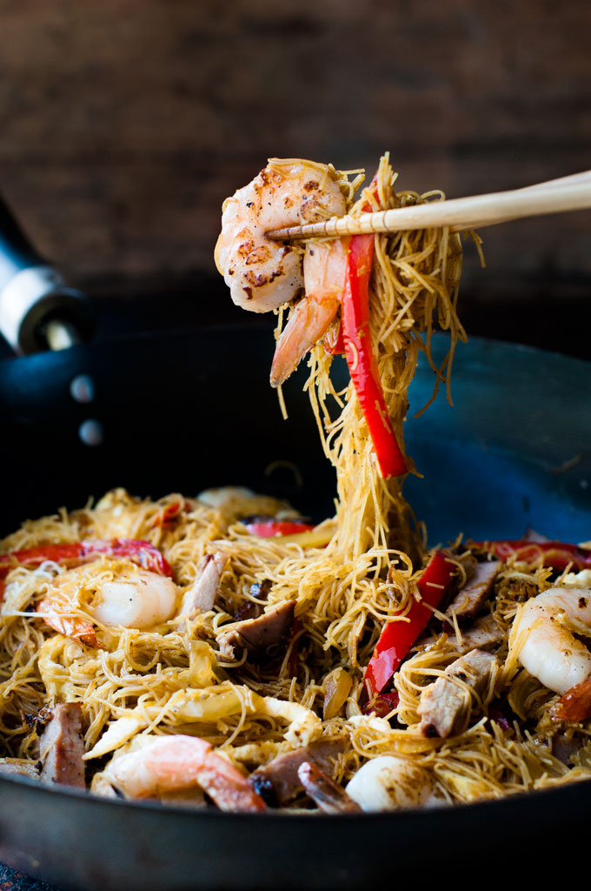

Image courtesy of and recipe adapted from Recipe Tin Eats
Singapore noodles is one of those classic south east Asian street foods that hawkers whip up in minutes. It’s become hugely popular in Western countries and you often see it on menus of Chinese and other Asian restaurants, whether they serve other Singaporean food or not.
But here’s a bit of food trivia for you – the Singapore Noodles as many western countries know it, with the curry flavour and touch of spice, is not the authentic way it is made in Singapore. That probably doesn’t come as a huge surprise to you, as it is the case with most Asian dishes that are popular in Western countries. I just found this particularly interesting because the curry flavour of Singapore Noodles is what I consider to be the signature flavour of these noodles. But in fact, curry is not used in the authentic recipe in Singapore.
Very versatile, it is just as easy to make at home and you can substitute the stir fry ingredients with whatever you have on hand. Since it is a "dry" style stir fry so it isn't saucy. The sauce flavour gets soaked into the noodles, and there is plenty of flavour - you can even just eat the noodles plain!
Servings 2-3
Prep Time 15 minutes
Cook Time 10 minutes
Total Time 25 minutes
Serving Size 2 cups Serving Per Container 4Nutrition Facts
Amount Per Serving
Calories
379 kcal
Total Fat
7 g
Saturated Fat
0 g
Polyunsaturated Fat
0 g
Monounsaturated Fat
0 g
Cholesterol
0 mg
Sodium
0 mg
Potassium
0 mg
Total Carbohydrate
49 g
Dietary Fiber
5 g
Sugars
10 g
Protein
33 g
Values are only an estimate, and in no way to be taken as 100% accurate.